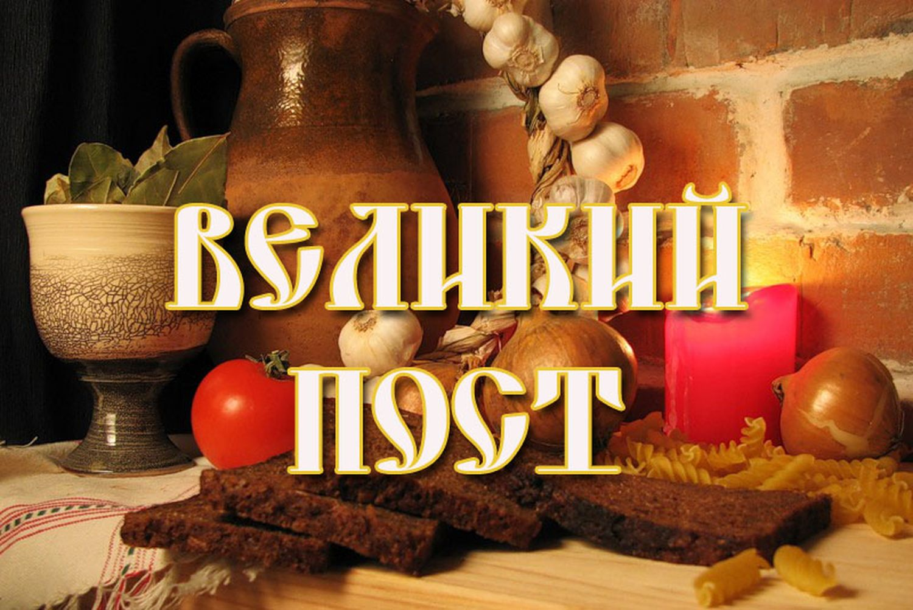

Великий пост – самый длинный и безусловно, самый главный для православных христиан ежегодный многодневный пост. Он длится 49 дней, 7 весенних недель, и проходит в разное время, поскольку его начало и окончание целиком зависят от даты Пасхи, которая ежегодно меняется. Определение даты Пасхи – достаточно сложная календарно-математическая операция, исчисляемая по лунно-солнечному календарю. Пасху празднуют в первое воскресенье после первого весеннего полнолуния, наступившего после дня весеннего равноденствия. Пасха может праздноваться в один из 35 дней с 4 апреля по 8 мая. И соответственно, Великий пост может начинаться в любой понедельник в период с 15 февраля по 21 марта. Суть и смысл Великого поста сводятся к подготовке человека к самому главному церковному празднику в честь воскресения Иисуса Христа – Пасхе, что предусматривает восстановление гармонии между человеческим телом и душой. Именно благодаря различным ограничениям в еде и в земных удовольствиях, каждый человек воспитывает в себе дух, который и должен управлять человеческим телом, а не наоборот. Питание во время поста предполагает серьезные ограничения. Запрещено есть мясо и мясные продукты, яйца, молочные продукты, животные жиры, а также содержащие их кондитерские изделия, а рыба и вино разрешены только в т.н. дни послабления или в праздники. К постной пище относятся зерновые (хлеб, крупы), бобовые, в том числе соя, овощи, фрукты, ягоды, грибы, орехи, пряности, мед, растительные масла. Основной проблемой питания в пост является недостаток в рационе полноценного белка. В связи с этим особое значение для постного стола приобретают богатые белком продукты из бобовых культур и растительное молоко. Именно эти продукты помогают выдержать весь пост без нарушений, соблюдая все его требования и правила. Главное – помнить, что самыми строгими с точки зрения питания являются 1-я неделя, когда начинается св. Четырехдесятница, и последняя Страстная неделя перед Пасхой. Россияне накопили уже значительный опыт такого воздержания, используя в своем рационе широкий ассортимент вегетарианских продуктов питания. И если в начале ХХ века в России были популярны такие постные продукты, как конопляное, миндальное и маковое молоко, то в наше время их заменило соевое молоко и продукты на его основе (йогурты, сметана, майонез, тофу и др. растительные молочные продукты), а также различные вегетарианские полуфабрикаты и сухие соевые продукты. Их повседневное использование, несмотря на отсутствие в рационе человека продуктов животного происхождения, позволяет не только дополнять и разнообразить стол, но и не снижать при этом уровня поступления основных пищевых веществ и их качество.
Ученицы 11 класса гимназии №1
Медуницыной Александры.
Учитель Шотт А.А.